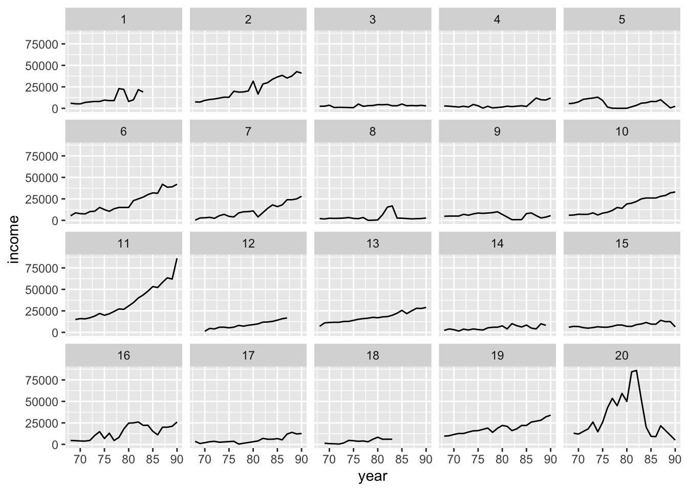
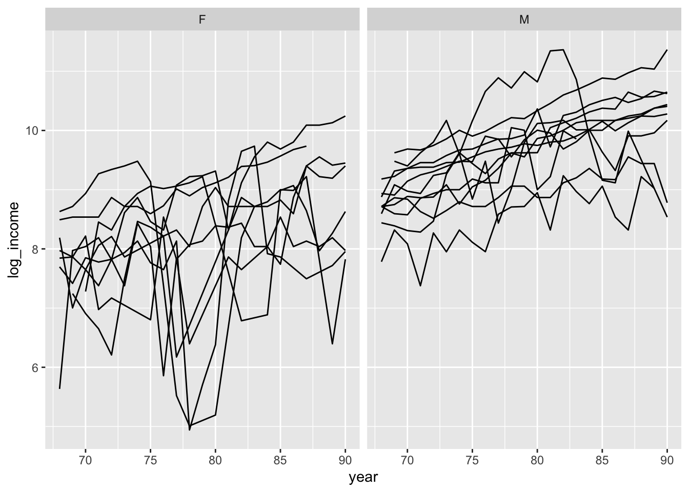
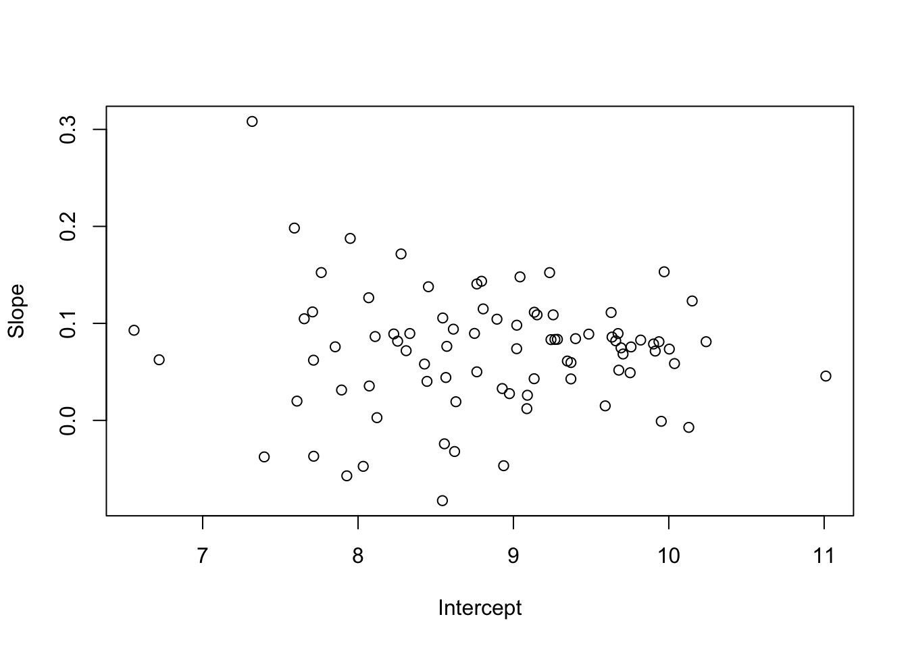
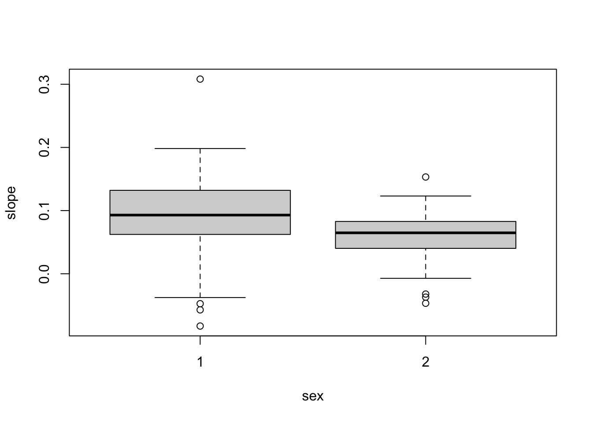
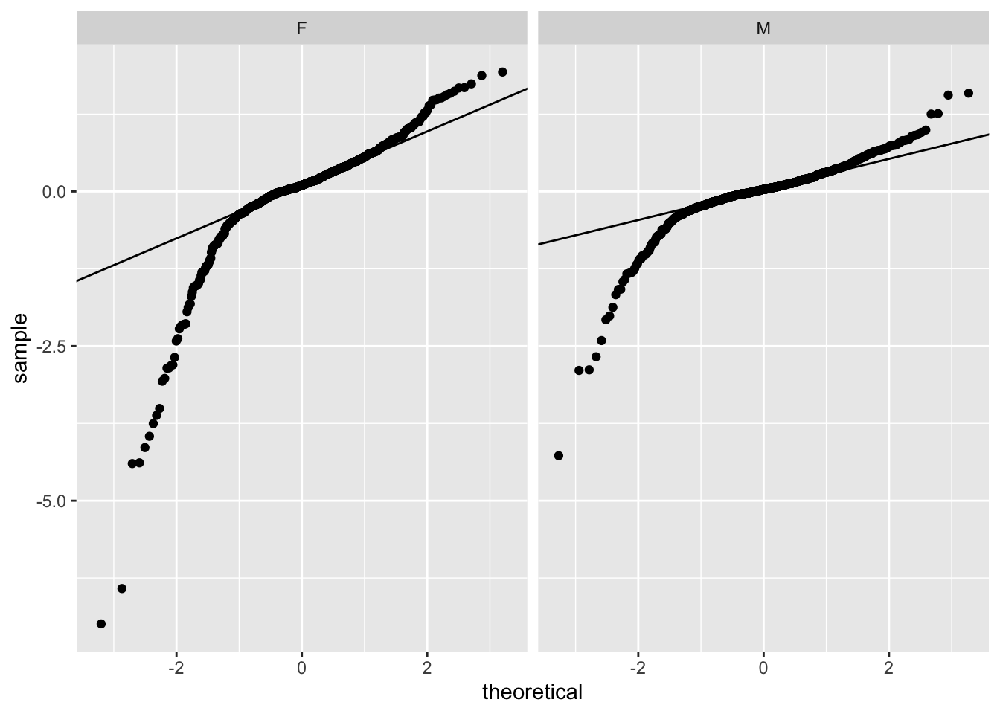
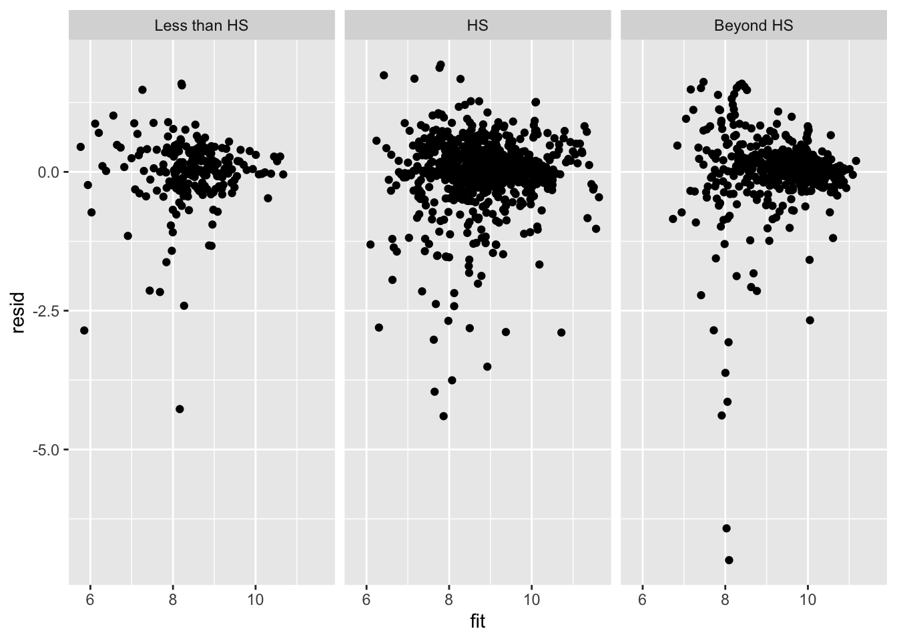
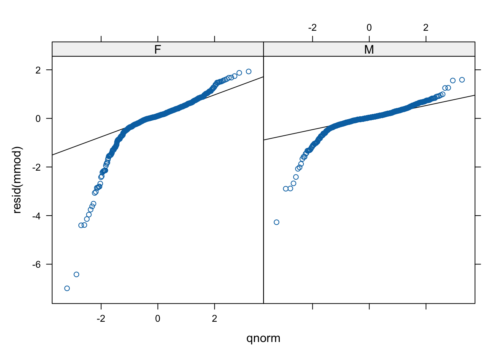

library( arm )
library( ggplot2 )
library( plyr )
# Install package from textbook to get the data by
# running this line once.
#install.packages( "faraway" )40 Code for Faraway Example
This handout gives the code for the longitudinal data example from Faraway book chapter 9 (see iPac on Canvas). See that chapter to get explanations, etc., or just run code line by line to see what you get! Note: this code uses ggplot. Book uses another plotting package called lattice; don’t bother with lattice.
40.1 R Setup
40.2 First Example
# load the data
library(faraway)
data(psid)
head(psid) age educ sex income year person
1 31 12 M 6000 68 1
2 31 12 M 5300 69 1
3 31 12 M 5200 70 1
4 31 12 M 6900 71 1
5 31 12 M 7500 72 1
6 31 12 M 8000 73 1# Make log-transform of income
psid$log_income = with( psid, log( income + 100 ) )
# Look at some plots
psid.sub = subset( psid, person < 21 )
ggplot( data=psid.sub, aes( x=year, y=income ) ) +
facet_wrap( ~ person ) +
geom_line()
ggplot( data=psid.sub, aes( x=year, y=log_income, group=person ) ) +
facet_wrap( ~ sex ) +
geom_line()
# Simple regression on a single person
lmod <- lm( log_income ~ I(year-78), subset=(person==1), psid)
coef(lmod) (Intercept) I(year - 78)
9.40910950 0.08342068 # Now do linear regression on everyone
sum.stat = ddply( psid, .(person), function( dat ) {
lmod <- lm(log(income) ~ I(year-78), data=dat )
cc = coef(lmod)
names(cc) = c("intercept","slope")
c( cc, sex=dat$sex[[1]] )
} )
head( sum.stat ) person intercept slope sex
1 1 9.399957 0.08426670 2
2 2 9.819091 0.08281031 2
3 3 7.893863 0.03131149 1
4 4 7.853027 0.07585135 1
5 5 8.033453 -0.04738677 1
6 6 9.673443 0.08953380 2plot( slope ~ intercept, data=sum.stat, xlab="Intercept",ylab="Slope")
boxplot( slope ~ sex, data=sum.stat )
# Is rate of income growth different by sex?
t.test( slope ~ sex, data=sum.stat )
Welch Two Sample t-test
data: slope by sex
t = 2.3786, df = 56.736, p-value = 0.02077
alternative hypothesis: true difference in means between group 1 and group 2 is not equal to 0
95 percent confidence interval:
0.00507729 0.05916871
sample estimates:
mean in group 1 mean in group 2
0.08903346 0.05691046 # Is initial income different by sex?
t.test( intercept ~ sex, data=sum.stat )
Welch Two Sample t-test
data: intercept by sex
t = -8.2199, df = 79.719, p-value = 3.065e-12
alternative hypothesis: true difference in means between group 1 and group 2 is not equal to 0
95 percent confidence interval:
-1.4322218 -0.8738792
sample estimates:
mean in group 1 mean in group 2
8.229275 9.382325 40.3 Fitting the model
# Fitting our model
library(lme4)
psid$cyear <- psid$year-78
mmod <- lmer(log(income) ~ cyear*sex + age + educ + (cyear|person), psid)
display(mmod)lmer(formula = log(income) ~ cyear * sex + age + educ + (cyear |
person), data = psid)
coef.est coef.se
(Intercept) 6.67 0.54
cyear 0.09 0.01
sexM 1.15 0.12
age 0.01 0.01
educ 0.10 0.02
cyear:sexM -0.03 0.01
Error terms:
Groups Name Std.Dev. Corr
person (Intercept) 0.53
cyear 0.05 0.19
Residual 0.68
---
number of obs: 1661, groups: person, 85
AIC = 3839.8, DIC = 3751.2
deviance = 3785.5 # refit with the lmerTest library to get p-values
library( lmerTest )
mmod <- lmer(log(income) ~ cyear*sex + age + educ + (cyear|person), psid)
summary(mmod)Linear mixed model fit by REML. t-tests use Satterthwaite's method [
lmerModLmerTest]
Formula: log(income) ~ cyear * sex + age + educ + (cyear | person)
Data: psid
REML criterion at convergence: 3819.8
Scaled residuals:
Min 1Q Median 3Q Max
-10.2310 -0.2134 0.0795 0.4147 2.8254
Random effects:
Groups Name Variance Std.Dev. Corr
person (Intercept) 0.2817 0.53071
cyear 0.0024 0.04899 0.19
Residual 0.4673 0.68357
Number of obs: 1661, groups: person, 85
Fixed effects:
Estimate Std. Error df t value Pr(>|t|)
(Intercept) 6.674211 0.543323 81.176972 12.284 < 2e-16 ***
cyear 0.085312 0.008999 78.915123 9.480 1.14e-14 ***
sexM 1.150312 0.121292 81.772542 9.484 8.06e-15 ***
age 0.010932 0.013524 80.837434 0.808 0.4213
educ 0.104209 0.021437 80.722319 4.861 5.65e-06 ***
cyear:sexM -0.026306 0.012238 77.995359 -2.150 0.0347 *
---
Signif. codes: 0 '***' 0.001 '**' 0.01 '*' 0.05 '.' 0.1 ' ' 1
Correlation of Fixed Effects:
(Intr) cyear sexM age educ
cyear 0.020
sexM -0.104 -0.098
age -0.874 0.002 -0.026
educ -0.597 0.000 0.008 0.167
cyear:sexM -0.003 -0.735 0.156 -0.010 -0.01140.4 Model Diagnostics
# First add our residuals and fitted values to our original data
# (We can do this since we have no missing data so the rows will line up
# correctly)
psid = transform( psid, resid=resid( mmod ),
fit = fitted( mmod ) )
head( psid ) age educ sex income year person log_income cyear resid fit
1 31 12 M 6000 68 1 8.716044 -10 0.06719915 8.632316
2 31 12 M 5300 69 1 8.594154 -9 -0.13201639 8.707478
3 31 12 M 5200 70 1 8.575462 -8 -0.22622748 8.782641
4 31 12 M 6900 71 1 8.853665 -7 -0.01852759 8.857804
5 31 12 M 7500 72 1 8.935904 -6 -0.01030887 8.932967
6 31 12 M 8000 73 1 8.999619 -5 -0.02093325 9.008130# Here is a qqplot for each sex
ggplot( data=psid ) +
facet_wrap( ~ sex ) +
stat_qq( aes( sample=resid ) )# If you want to add the lines, you have to do a little more work
slopes = ddply( psid, .(sex), function( dat ) {
y <- quantile(dat$resid, c(0.25, 0.75))
x <- qnorm(c(0.25, 0.75))
slope <- as.numeric( diff(y)/diff(x) )
int <- y[[1]] - slope * x[[1]]
c( slope=slope, int=int )
} )
slopes sex slope int
1 F 0.4324568 0.10579138
2 M 0.2473357 0.03321435ggplot( data=psid ) +
facet_wrap( ~ sex ) +
stat_qq( aes( sample=resid ) ) +
geom_abline( data=slopes, aes( slope=slope, intercept=int ) )
And a residual plot
psid$educ_levels = cut(psid$educ, c(0,8.5,12.5,20), labels=c( "Less than HS", "HS", "Beyond HS" ) )
ggplot( data=psid, aes( x=fit, y=resid ) ) +
facet_wrap( ~ educ_levels ) +
geom_point()
40.4.1 Lattice code
For reference, we can also do this:
# This is doing it from the lattice package
library( lattice )
qqmath(~resid(mmod) | sex, psid)# fancier with some lines. The points should lie on the line
# if we have normal residuals. (We don't.)
qqmath(~ resid(mmod) | sex, data = psid,
panel = function(x, ...) {
panel.qqmathline(x, ...)
panel.qqmath(x, ...)
})